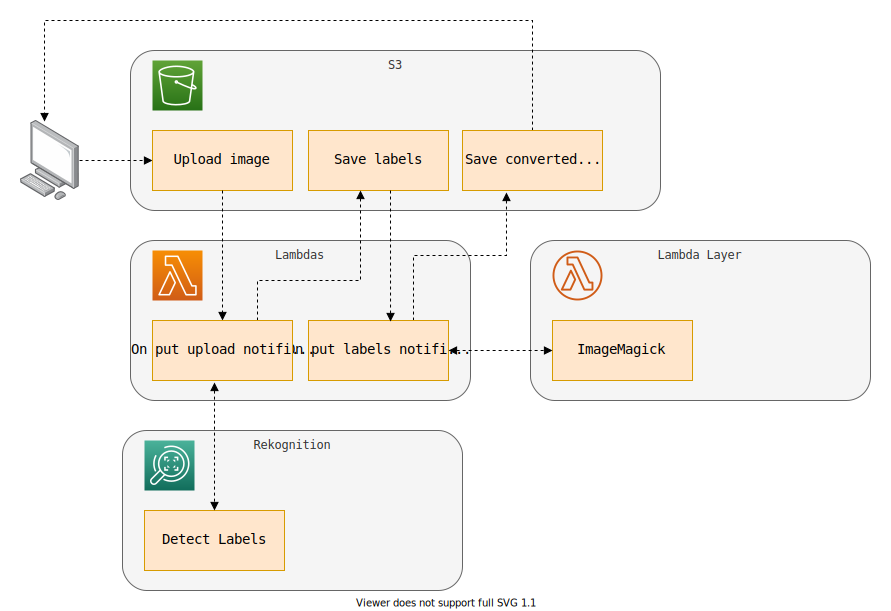
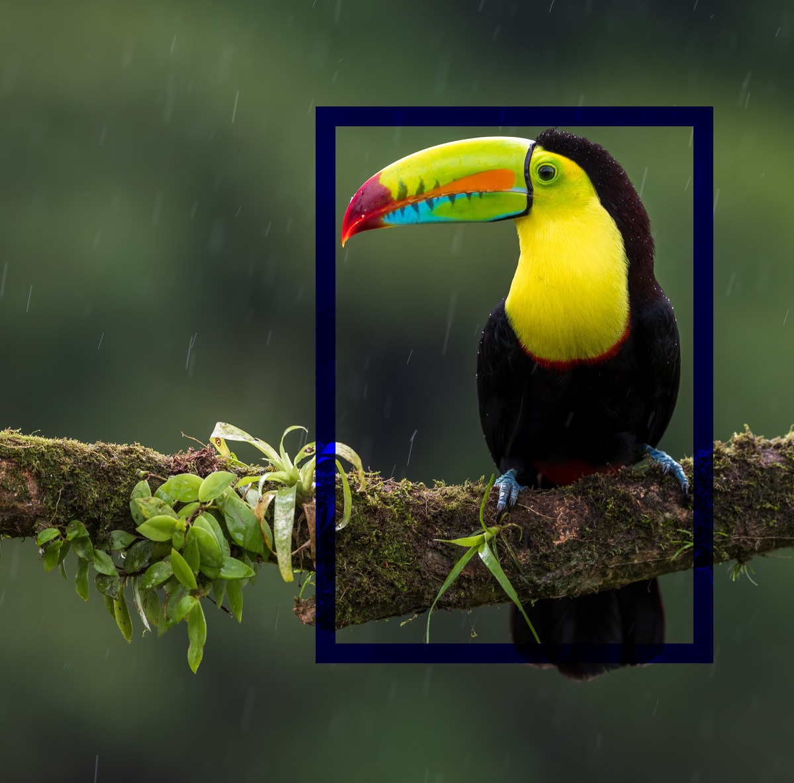
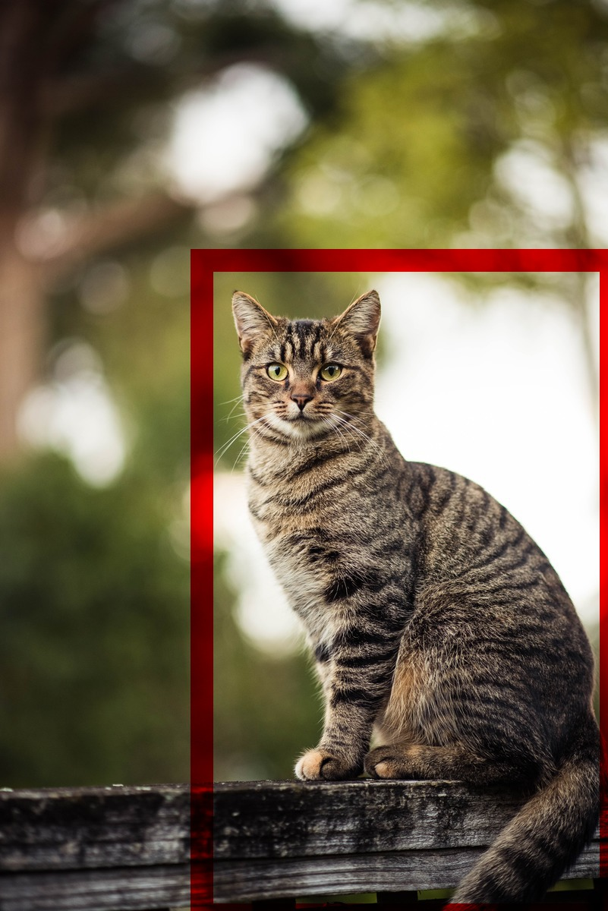
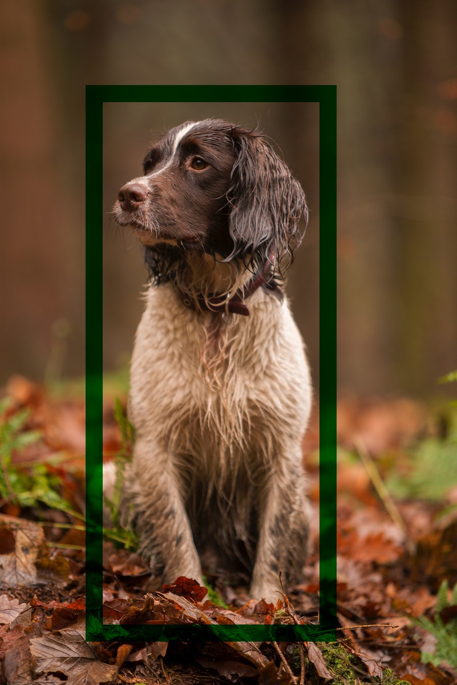

S3 Event Notification + Rekognition + ImageMagick
The Goal
This project uses Rekognition to detect the presence of a bird, a cat or a dog in an image. Then, using ImageMagick, he draws the bounding box of the detected animal.

Install and setup the project
Get the code from this github repository :
# download the code
$ git clone \
--depth 1 \
https://github.com/jeromedecoster/aws-s3-notification-rekognition-imagemagick.git \
/tmp/aws
# cd and setup
$ cd /tmp/aws && make init
We also need to install saw :
# download
$ curl --location \
--remote-name \
https://github.com/TylerBrock/saw/releases/download/v0.2.2/saw_0.2.2_linux_amd64.tar.gz
# extract and install
$ sudo tar \
--extract \
--directory /usr/local/bin \
--file saw_0.2.2_linux_amd64.tar.gz \
saw
# installed with success
$ saw version
v0.2.2
Exploring the project
Let’s look at some parts of the source code.
In the s3.tf file we :
- Create two S3 Notifications Event.
resource aws_s3_bucket_notification bucket_upload_notification {
bucket = aws_s3_bucket.bucket.id
lambda_function {
lambda_function_arn = aws_lambda_function.upload_function.arn
events = ["s3:ObjectCreated:*"]
filter_prefix = "uploads/"
}
lambda_function {
lambda_function_arn = aws_lambda_function.label_function.arn
events = ["s3:ObjectCreated:*"]
filter_prefix = "labels/"
}
}
In the Lambda upload.js file we :
- Call Rekognition .detectLabels.
- Find the first bird, cat or dog with a BoundingBox.
- Save the JSON data received from Rekognition on S3.
exports.handler = async (event) => {
let record = event.Records[0]
let key = record.s3.object.key
let basename = path.basename(key, path.extname(key))
let data = {
region: record.awsRegion,
bucket: record.s3.bucket.name,
key,
output: `labels/${basename}.json`,
}
try {
await detectLabels(data)
await parseLabels(data)
await putObject(data)
return {
statusCode: 200,
body: `https://${data.bucket}.s3.${data.region}.amazonaws.com/${data.output}`,
}
} catch (err) {
throw new Error(err)
}
}
// call rekognition to detect labels
async function detectLabels(data) {
let labels = await rekognition
.detectLabels({
Image: {
S3Object: {
Bucket: data.bucket,
Name: data.key
}
}
})
.promise()
data.labels = labels
return Promise.resolve(data)
}
// is there bird, cat or dog ?
async function parseLabels(data) {
let found = data.labels.Labels
.find(e => e.Name == 'Bird' || e.Name == 'Cat' || e.Name == 'Dog')
if (found != null && found.Instances.length > 0) {
data.name = found.Name
data.instance = found.Instances[0]
}
return Promise.resolve(data)
}
In the Lambda label.js file we :
- Get the uploaded image and JSON labels from S3.
- Draw a colored Bounding Box if an animal was detected. Blue for a bird, Red for a cat and Green for a dog.
- Convert the image to black and white if none of these animals have been detected.
async function draw(data) {
let cmd = ''
if (data.instance != null) {
cmd = `/opt/bin/convert ${data.input} ` +
`\\\( +clone -fill white -colorize 100 -fill ${data.draw.color} -draw "rectangle ${data.draw.outleft},${data.draw.outtop} ${data.draw.outwidth},${data.draw.outheight}" ` +
`-fill white -draw "rectangle ${data.draw.left},${data.draw.top} ${data.draw.width},${data.draw.height}" \\\) -compose multiply -composite ${data.output}`
} else {
cmd = `/opt/bin/convert ${data.input} -colorspace Gray ${data.output}`
}
return exec(cmd)
}
The scripts directory have some files to :
- Watch the CloudWatch logs with saw :
saw watch \
--region $REGION \
$UPLOAD_LOG_GROUP
- Invoque a Lambda function from CLI with a dynamically generated payload :
EVENT=$(cat <<EOF
{
"Records": [
{
"eventVersion": "2.0",
"eventSource": "aws:s3",
"awsRegion": "REGION",
"eventTime": "EVENT_TIME",
"eventName": "ObjectCreated:Put",
"userIdentity": {
"principalId": "EXAMPLE"
},
"requestParameters": {
"sourceIPAddress": "127.0.0.1"
},
"responseElements": {
"x-amz-request-qid": "EXAMPLE123456789",
"x-amz-id-2": "EXAMPLE123/5678abcdefghijklambdaisawesome/mnopqrstuvwxyzABCDEFGH"
},
"s3": {
"s3SchemaVersion": "1.0",
"configurationId": "testConfigRule",
"bucket": {
"name": "BUCKET",
"ownerIdentity": {
"principalId": "EXAMPLE"
},
"arn": "arn:aws:s3:::BUCKET"
},
"object": {
"key": "KEY",
"size": "SIZE",
"eTag": "ETAG",
"sequencer": "0A1B2C3D4E5F678901"
}
}
}
]
}
EOF
)
echo "$EVENT" | sed \
--expression "s|REGION|$REGION|" \
--expression "s|BUCKET|$BUCKET|" \
--expression "s|KEY|$KEY|" \
--expression "s|SIZE|$SIZE|" \
--expression "s|ETAG|$ETAG|" \
--expression "s|EVENT_TIME|$EVENT_TIME|"
Run the project
We use make commands to run the project :
# initialise
$ make init
# deploy with terraform
$ make apply
In 2 new terminal windows, tail the CloudWatch logs :
# watch the `upload` Lambda logs
$ make watch-uploads
# watch the `label` Lambda logs
$ make watch-labels
Upload the images :
# upload images to S3
$ make bird1.jpg bird1.jpg \
cat1.jpg cat2.jpg \
dog1.jpg dog2.jpg \
squirrel.jpg
Download the converted images :
# download converted images from S3
$ make download
And we get these results :


